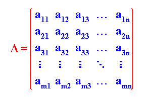
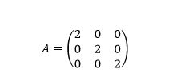
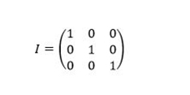
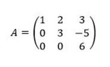

Aprendiendo Algebra
Desde casa :D
Introducción
Una matriz es un conjunto de números ordenados en filas y columnas. Las matrices tienen por nombre una letra mayúscula y sus elementos se encierran entre dos paréntesis (o dos corchetes) Ejemplo de matriz:
Decimos que una matriz es de orden M x N (o de dimensión M x N) cuando tiene (M) filas y (N) columnas.
La siguiente matriz es de orden 2 X 3 (tiene 2 filas y 3 columnas)

Una matriz de orden M x N se expresa de forma genérica
donde el elemento a(ij) denota que está en la fila i y en la columna j
En la matriz el elemento A(21) (fila 2 , columna 1) vale "3" .Todos los elementos de la matriz
Se puede definir una matriz, como un conjunto de elementos (números) ordenados en filas y columnas
Para designar una matriz se emplean letras mayúsculas. Cada uno de los elementos de la matriz (aij) tiene dos subíndices. El primero i indica la fila a la que pertenece y el segundo j la columna.
Esta es una matriz de m filas y n columnas, es decir, de dimensión m x n.
Esta matriz también se puede representar de la forma siguiente: A = (aij) m x n. Si el número de filas y de columnas es igual ( m = n ), entonces se dice que la matriz es de orden n.
Matriz traspuesta
Dada una matriz A, su traspuesta (At) es la que se obtiene al cambiar sus filas por las columnas en el mismo orden. Por ejemplo:
Si todos los elementos de la matriz son 0 se llama matriz nula. Por ejemplo:
Matriz diagonal
Una matriz diagonal es una matriz cuadrada si los elementos que no están en la diagonal principal son nulos. Por ejemplo
Matiz simétrica
Una matriz cuadrada es simétrica si se cumple que aij = aji . Además, se cumple la matriz es igual a su traspuesta. Por ejemplo:
Matriz escalar
Una matriz escalar es una matriz diagonal en la que los elementos de la diagonal principal son iguales
Matriz identidad
Una matriz identidad o matriz unidad es una matriz diagonal en la que todos los elementos no nulos son 1. Por ejemplo:
Matriz triangular
Una matriz cuadrada en la que todos los elementos por encima o debajo de la diagonal principal son 0 se llama matriz triangular. Por ejemplo: